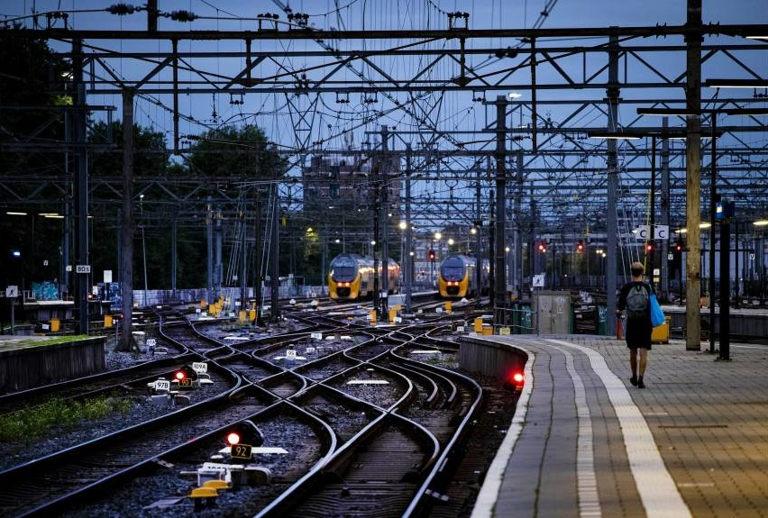
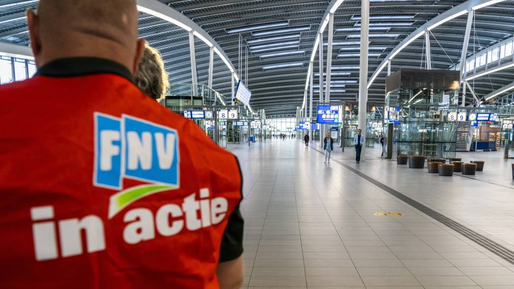
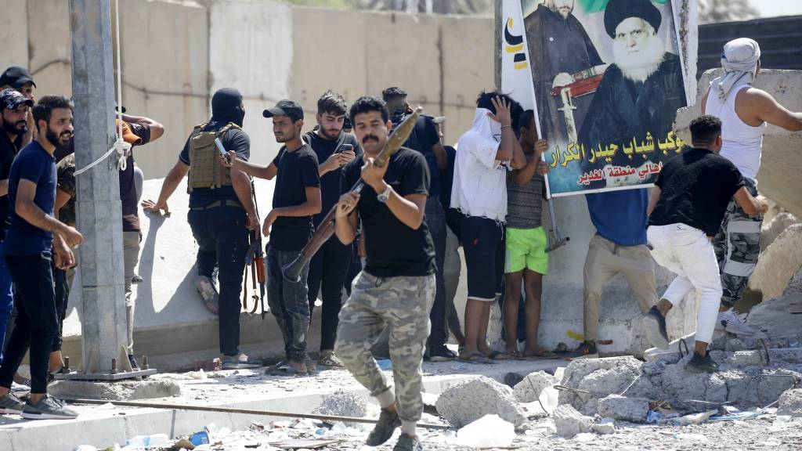
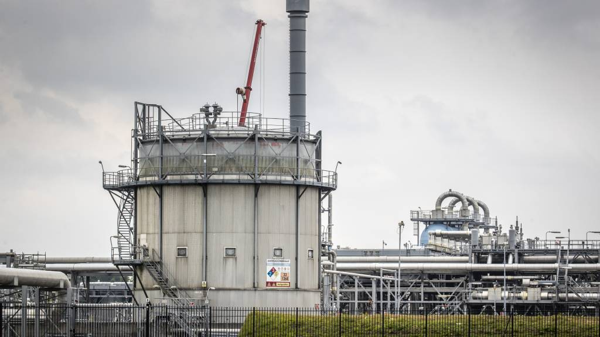
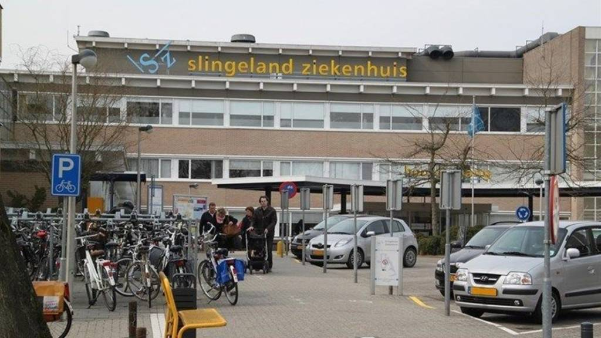
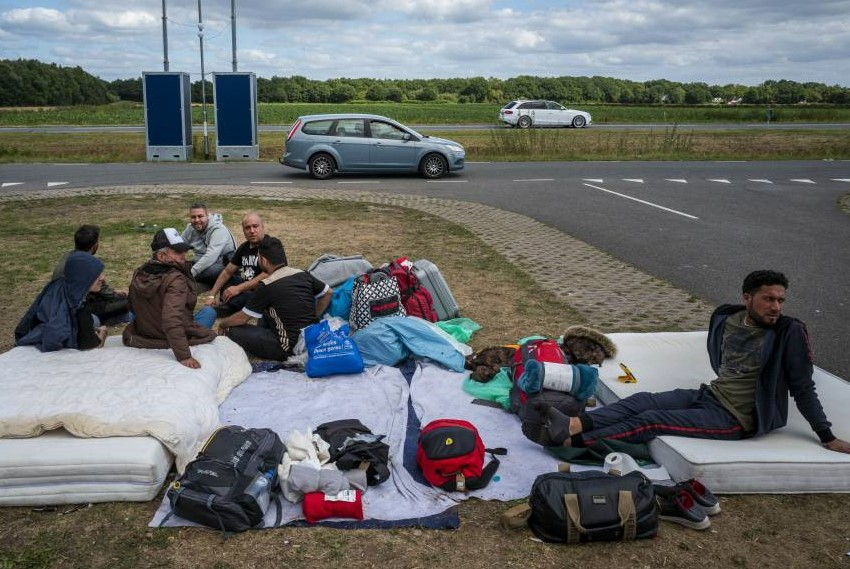

STARTPAGINA
NIEUWS
CONTACT
nieuws van 30 augustus 2022
in midden van het land staakt, ook elders bijna geen treinen
Lege stations, drukkere ochtendspits door staking bij NS
Crisis in Irak escaleert, zware gevechten in groene zone Bagdad
Nederland verbruikte in eerste half jaar kwart minder aardgas dan vorig jaar
Stroomstoring ziekenhuis Doetinchem voorbij, zorg hervat
Vannacht opnieuw geen gedwongen buitenslapers in Ter Apel
Kerncentrale Oekraïne allesbehalve veilig: 'De Russen moeten hier echt weg
Steeds meer mensen hebben een variabel energiecontract
Simon wilde breuk met Nick: ‘Lol is weg, maar er is geen ruzie’
Expeditie Robinson-kijkers zien een ‘valsspelende’ Harry Piekema
Studenten betalen volgend schooljaar meer collegegeld
Gasprijzen dalen flink; hoe kan dat?
Raad van State: ‘Neem avondklok en coronatoegangsbewijs in permanente coronawet op’
Voor altijd vreselijke piep in je oor: ‘vloedgolf’ aan tinnituspatiënten verwacht
Hoe komt een hechte gemeenschap met 220 inwoners zo’n klap te boven?
Fleet Festival op Markermeer eindigt in chaos: ‘Als er iets ernstigs was gebeurd, waren we de lul geweest’